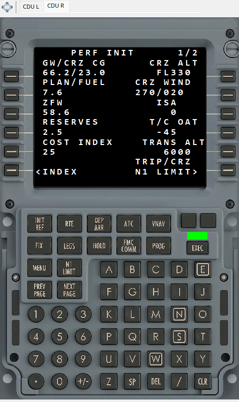

This view displays recorded B737 CDU text with available colors, small/large fonts and annunciators. Tabs select left/right units, which may show different pages. Background keys are presentation only and do not program the FMS.
Scrubbing selects the last screen known at the requested time. Unchanged text may be correct when only changes were captured. INIT/PERF/LEGS content is historical, not an automatically computed map route. Missing data for one unit cannot be replaced by the other without evidence. B777 coverage and formatting depend on SDK version. The two screenshots show separate units in a detached panel.
